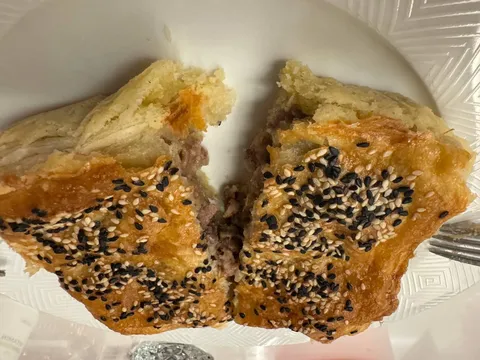
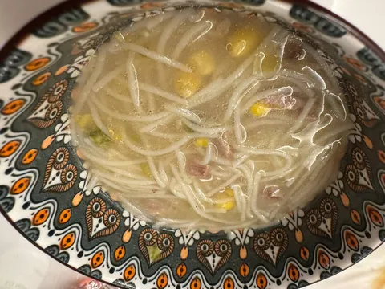

Мы продолжаем изучать гастро-географию, и на этой неделе выпала Австралия.
Сын сразу нашел ее на глобусе и сходу выпалил, что это единственная страна, занимающая свой материк целиком, что находится она в южном в восточном полушариях, и что она пятая по площади в мире. И что туземцев там захватили англичане. А вот жена призадумалась.
Потому что какой-то своей ярковыраженной гастрокультуры там почти нет. Изначально кухня Австралии, по понятным причинам, формировалась из английской. Потом туда понаехали из самых разных стран и, как в любой стране нового света, получился фьюжн. В последнее время там, говорят, сильно увлеклись азиатской кухней, но своего придумали немного.
Да, какой-то локальный колорит все же присутствует. Могут и кенгуру зажарить, и крокодила схомячить. Но почему-то мяса кенгуру не нашлось ни в Лавке, ни в Еде. Однако, жене удалось наскрести каких-то местных рецептов и получилось следующее.
Во-первых, мясной пирог. Говорят, они только этими пирогами и питаются, и каждый австралиец съедает по 4 пирога в неделю. В пироге два вида теста (сверху слоеное, внизу скорее песочное) и рубленная говядина с тимьяном и вустерским соусом. Получилось вкусно и необычно, нам понравилось. Могу понять австралийцев.
Во-вторых, кукурузно-индюшачий суп с рисовой лапшой, соевым соусом и имбирем. Не так экзотично, прослеживаются азиатские мотивы, но, тем не менее - хорошо. Секрет в том, чтобы часть кукурузы загодя перетереть в пюре, а часть - добавить зернами.
В-третьих, на выходных нас ожидает что-то из креветок. Что именно - не знаю, просто видел, что креветки появились в морозилке. Оно и немудрено, когда у тебя страна со всех сторон окружена океанами. Да и креветки как ни приготовь - будет классно. Но что выйдет - вы так и не узнаете, потому что на следующей неделе будет уже новая страна, новые локал спешиэлитиз и новые факты о мире. Стэй тьюнд.
